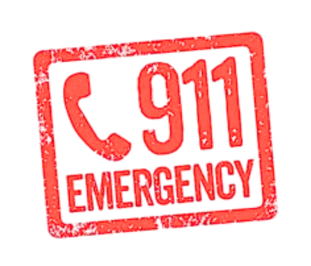
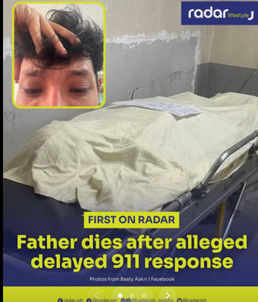

In the Philippines, 911 was officially launched as the national emergency hotline in August 2016, replacing the older 117 Emergency Hotline. It was established to provide quick and centralized access to police, fire, medical, and disaster response services across the country. The system was modeled after the United States 911 network, aiming to create a unified, free, and 24/7 emergency response line for all Filipinos. Managed by the Department of the Interior and Local Government (DILG) and the Philippine National Police (PNP), the hotline symbolizes the government’s effort to modernize emergency communication and ensure faster coordination during life‑threatening situations.To provide quick and reliable access to emergency assistance. It serves as a centralized communication system that connects citizens directly to police, fire, medical, and disaster response units. By dialing a single number, people can immediately report emergencies and receive help without needing to remember multiple local hotlines. The goal is to save lives, ensure public safety, and improve coordination among emergency agencies nationwide.
Content Creator named MJ Orquia shared his experience upon calling 911 to seek help as he witnessed a fire about to spread within their neighborhood. He tried to call 911 at least three times but no one answered. The situation occurs around 6 am so at first, he thought that maybe the hotline has a curfew but upon searching google, it doesn’t have any. Calling the hotline simultaneously will just eventually cause the fire to spread so he just abandon the thoughts of seek through 911 but call the local firefighter instead.

Emergency teams arriving late due to slow coordination. Actor and performer Basty Askry expressed his deepest sorrow toward the Philippine emergency hotline as it made him wait for around 10 minutes for someone to answer while his father was fighting for his life. His father later died.
When someone finally answered, that was supposed to be the time when help would finally arrive. But instead, they repeatedly told him to wait while hearing laughter from the other side as he continued to plead for emergency assistance. That leaves him with no choice but to perform CPR to his father just to stay alive.
The failures of the 911 emergency hotline in the Philippines can lead to serious and fatal outcomes. When calls go unanswered or dispatches are delayed, victims lose precious minutes that could determine survival. In medical emergencies such as heart attacks, strokes, or severe injuries, even a few minutes of delay can result in irreversible damage or death. In fire incidents, delayed response allows flames to spread rapidly, destroying homes and endangering entire communities. These lapses also force citizens to take desperate measures—like performing CPR without guidance or searching for local responders themselves—placing both victims and bystanders at risk. Ultimately, the unreliability of 911 undermines public trust and weakens the country’s ability to protect its people during critical situations.
The repeated failures of the 911 emergency hotline—such as unanswered calls and delayed responses—greatly damage public trust in government services. When citizens experience neglect or inefficiency during life‑threatening situations, they begin to doubt the reliability of national systems meant to protect them. This loss of confidence can lead people to avoid using 911 altogether, relying instead on local responders or social media for help. Over time, such distrust weakens the relationship between the public and authorities, making it harder for emergency programs to function effectively.
A weak emergency response system doesn’t just reflect poor service—it sends a message that citizens cannot depend on the government in times of crisis, which undermines national unity and accountability.